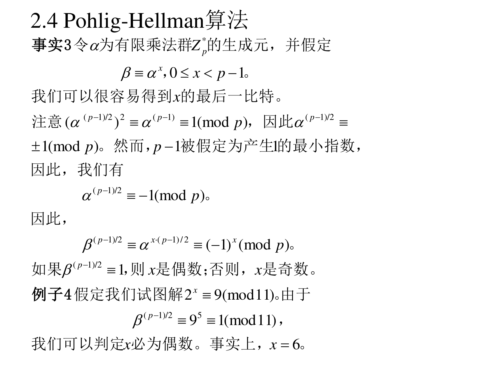
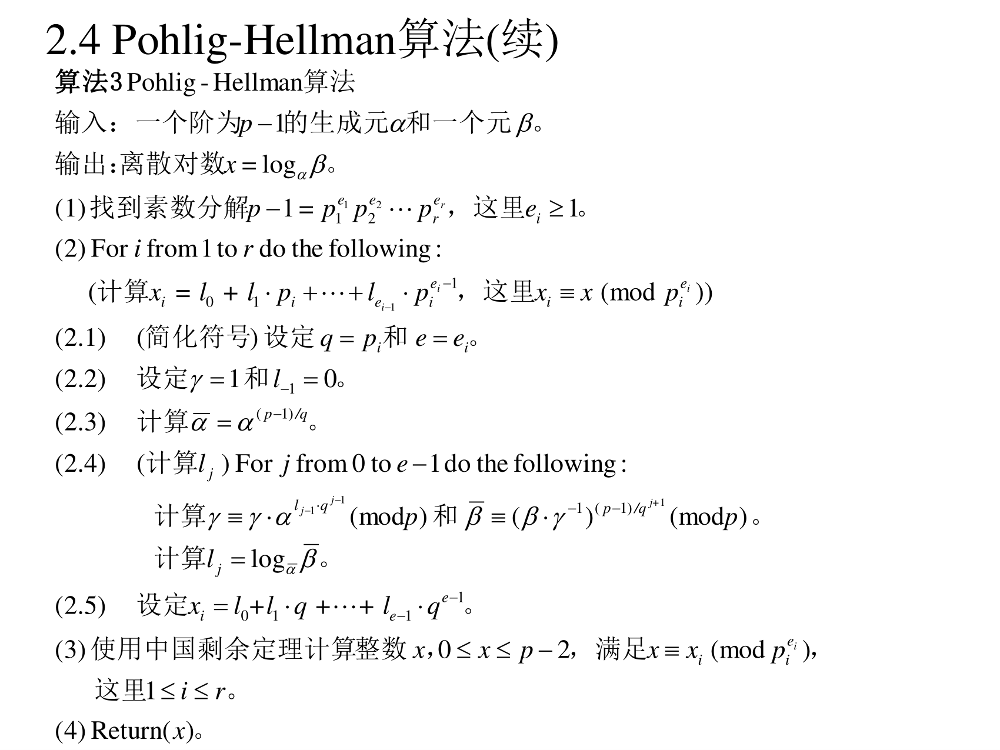
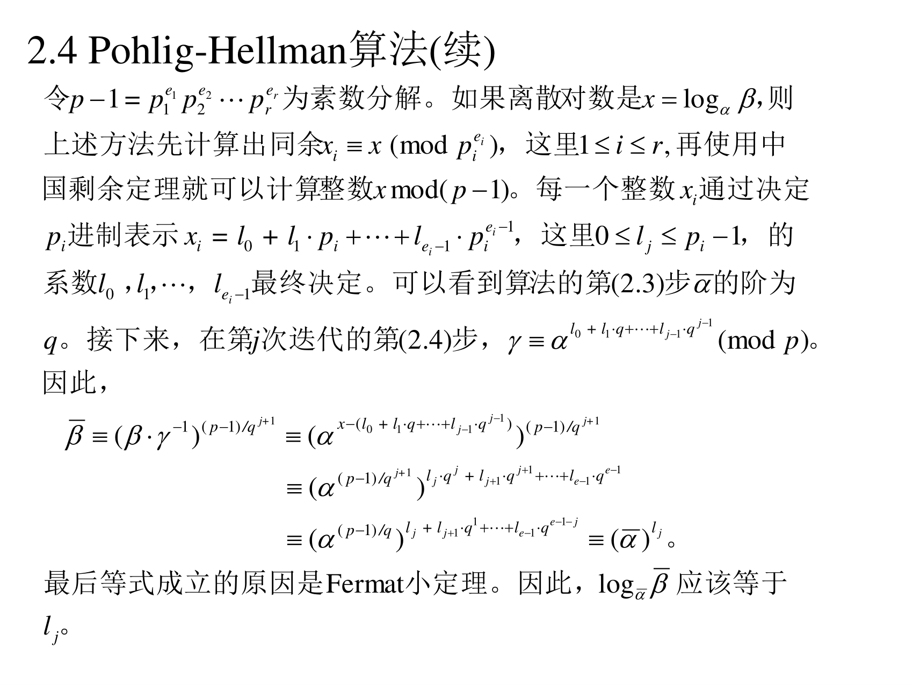
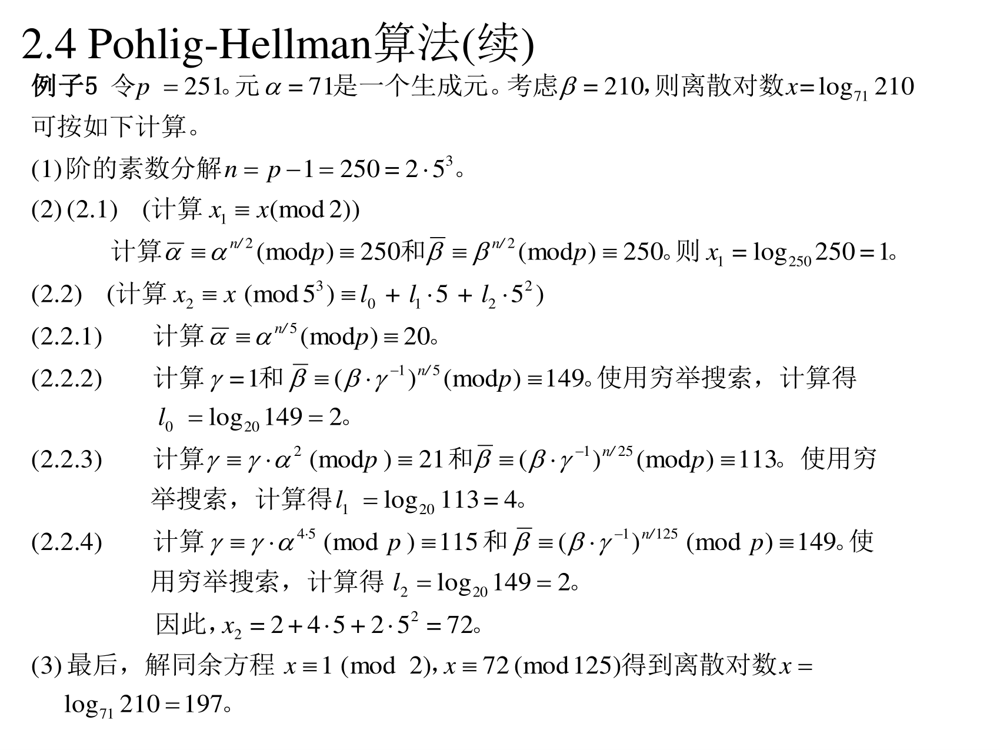

6.2.4 Pohlig-Hellman 算法
前面三种算法是"通用"的（什么群都能用，代价是 p）。Pohlig-Hellman 完全不同：它专门攻击 p−1 分解得太平滑的群——如果 p−1 的素因子都很小，DLP 就变得容易得可怕。
6.2.4.1 事实 3：先搞定最低位
（PPT 第 18 页）
事实 3：令 α 为有限乘法群 Zp∗ 的生成元，并假定 β≡αx，0≤x<p−1。我们可以很容易得到 x 的最后一比特。
注意 (α(p−1)/2)2≡α(p−1)≡1(modp)，因此 α(p−1)/2≡±1(modp)。然而，p−1 被假定为产生 1 的最小指数，因此，我们有
α(p−1)/2≡−1(modp)
因此，
β(p−1)/2≡αx(p−1)/2≡(−1)x(modp)
如果 β(p−1)/2≡1，则 x 是偶数；否则，x 是奇数。

例子 4：假定我们试图解 2x≡9(mod11)。由于 β(p−1)/2=95≡1(mod11)，我们可以判定 x 必为偶数。事实上，x=6。
翻译成人话：这是"从最低位往上逐位剥"思想的第一步。
- 已知 α(p−1)/2 只能取 ±1。又因为 p−1 是"让 αk=1 的最小指数"（生成元的定义），所以它不能是 1（否则 p−1 就不是最小的了）——只能是 −1。
- 于是把 β 也取 (p−1)/2 次方：β(p−1)/2=αx(p−1)/2=(α(p−1)/2)x=(−1)x。
- 结果只取决于 x 的奇偶，也就是 x 的最低二进制位 x0。
例子 4 手算：p=11，(p−1)/2=5。95 是奇数，95mod11：92=81≡4，94≡16≡5，95≡5×9=45≡1（45−4×11=1）✔。所以 x 偶。而 6 正是偶数 ✔（另外 x=6 也可从 6.1.3 节例子 1 直接查出）。
6.2.4.2 算法 3
（PPT 第 19–20 页）

算法 3（Pohlig-Hellman 算法）
输入：一个阶为 p−1 的生成元 α 和一个元 β。
输出：离散对数 x=logαβ。
(1) 找到素数分解 p−1=p1e1p2e2⋯prer，这里 ei≥1。
(2) For i from 1 to r do the following：
（计算 xi=l0+l1pi+⋯+lei−1piei−1，这里 x≡xi(modpiei)）
(2.1) （简化符号）设定 q=pi 和 e=ei。
(2.2) 设定 γ=1 和 l−1=0。
(2.3) 计算 α1=α(p−1)/q。
(2.4) （计算 lj）For j from 0 to e−1 do the following：
计算 γ=γ⋅αlj−1qj−1(modp) 和 βj=(β⋅γ−1)(p−1)/qj+1(modp)。
计算 lj=logα1βj。
(2.5) 设定 xi=l0+l1q+⋯+le−1qe−1。
(3) 使用中国剩余定理计算整数 x，0≤x≤p−2，满足 x≡xi(modpiei)，这里 1≤i≤r。
(4) Return (x)。

翻译成人话（这个算法最容易看晕，拆成四句话）：
- 把大问题拆成小问题：x 是模 p−1 的一个未知数。由 CRT，只要分别求出 xmodp1e1、xmodp2e2……再拼起来就够了。
- 每个小问题又拆成"进制位"：在模 piei 下，xi 是一个 pi 进制数：xi=l0+l1pi+⋯。逐位求：先求 l0，再求 l1，……
- 每一位都是一个"小 DLP"：求 lj 时，把 β 升到 (p−1)/qj+1 次方，这样所有"高位"信息都被"除没了"（费马小定理让它们变成 1），只剩 lj 这一个有效位。然后在一个阶为 q 的小群里求离散对数——因为 q=pi 很小，直接穷举（q 次）就行。
- 拼回：所有 lj 拼成 xi，所有 xi 用 CRT 拼成 x。
PPT 第 20 页那堆推导就是在证明第 3 步，核心一行：
(βγ−1)(p−1)/qj+1≡α1lj
（其中 α1=α(p−1)/q，所以右边是"阶为 q 的小群"里的元素。）推导中"最后等式成立的原因是 Fermat 小定理"——正是它把指数里高于 j 位的部分统统化成了 1。
6.2.4.3 评述
（PPT 第 21 页）
(1) 给定 p−1 的素数分解，则运行 Pohlig-Hellman 算法需要的时间是 O(∑i=1rei(lg(p−1)+pi)) 次乘法。
(2) (1) 说明 Pohlig-Hellman 算法仅当每个素数因子 pi 相对比较小时非常有效。考虑乘法群 Zp∗，这里 p 是 107 位十进制素数：
p=22708823198678103974314518195029102158525052496759285596453269189798311427475159776411276642277139650833937
素数分解 p−1=24⋅1047298⋅2247378⋅3503774。由于 p−1 最大的素数因子仅为 350377，这就使得用 Pohlig-Hellman 算法计算离散对数问题变得相对简单。
(3) 如果 p−1 不是一个平滑整数（全是小素因子），算法 3 就变得无效。
翻译成人话：这个 107 位素数看着吓人，但 p−1 的最大素因子只有 350377 —— 于是每一步"小 DLP"最多穷举 35 万次，几秒就算完了。结论：光看 p 大不大没用，关键看 p−1 有没有大的素因子。
6.2.4.4 例子 5（完整手算）
（PPT 第 22 页）

例子 5：令 p=251。元 α=71 是一个生成元。考虑 β=210，则离散对数 x=log71210 可按如下计算。
(1) 阶的素数分解 n=p−1=250=2⋅53。
(2) (2.1)（计算 x≡x1(mod2)）计算 αn/2≡71125≡250(modp) 和 βn/2≡210125≡250(modp)。则 x1=log250250=1。
(2.2)（计算 x≡x2(mod53)，x2=l0+l15+l252）
(2.2.1) 计算 αn/5=7150≡20(modp)。
(2.2.2) 计算 γ=1 和 β0=(β⋅γ−1)n/5≡149(modp)。使用穷举搜索，计算得 l0=log20149=2。
(2.2.3) 计算 γ≡γ⋅αl0q0≡21(modp) 和 β1=(β⋅γ−1)n/25≡113(modp)。使用穷举搜索，计算得 l1=log20113=4。
(2.2.4) 计算 γ≡γ⋅αl1q1≡115(modp) 和 β2=(β⋅γ−1)n/125≡149(modp)。使用穷举搜索，计算得 l2=log20149=2。
因此，x2=2+4⋅5+2⋅52=72。
(3) 最后，解同余方程 x≡1(mod2)，x≡72(mod125) 得到离散对数 x=log71210=197。
手把手复现：
第一步：x 的奇偶（模 2 部分）
- (p−1)/2=125。71125mod251=250≡−1 ✔（生成元的必然结果）
- 210125mod251=250≡−1。因为 β125=(−1)x，而结果是 −1，所以 x 奇。写成 x1=1。
- 换个说法：我们要求的是 l0 使得 α1l0=βn/2，其中 α1=αn/2=250。log250250=1 ✔（因为 2501=250）。
第二步：模 125=53 部分（q=5，e=3）
- α1=7150mod251=20（这是那个阶为 5 的小群的生成元：201,202,203,204,205=1）。
- 求 l0：β0=βn/5=21050mod251=149。在 5 阶子群 {200,201,202,203,204}={1,20,149,219,113} 里找 149 → 149=202，所以 l0=2。
- 求 l1：先把 l0 的贡献除掉——γ=αl0q0=712mod251=5041，5041−20×251=5041−5020=21 ✔（与 PPT 的 21 一致）。然后 β1=(β⋅γ−1)(p−1)/q2=(210⋅21−1)10mod251=113。在同一个 5 阶子群里找 113 → 113=204，所以 l1=4。
- 求 l2：γ=71l0+l1⋅5=712+20=7122mod251=115 ✔（与 PPT 一致）。β2=(βγ−1)n/125=(β⋅115−1)2mod251=149。而 149=202，所以 l2=2。
- 拼：x2=l0+l1⋅5+l2⋅25=2+20+50=72。
第三步：CRT
解 x≡1(mod2)、x≡72(mod125)：设 x=72+125k，要 72+125k 为奇 → k 取 1 → x=197。
验证：71197mod251=210 ✔
感受一下工作量：直接穷举要试 x 到 197；这里只做了两个 5 元素表的穷举（找 2、4、2）+ 少量模幂。p 更大时差距是天文数字级的（比如 p−1 是 100 位平滑整数）。